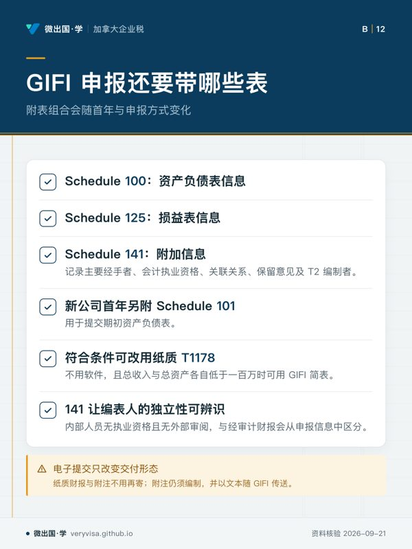
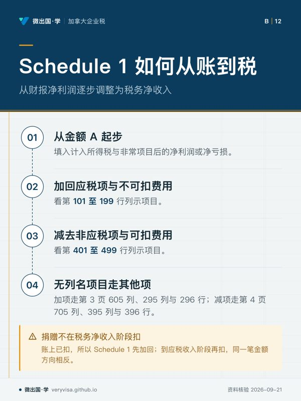
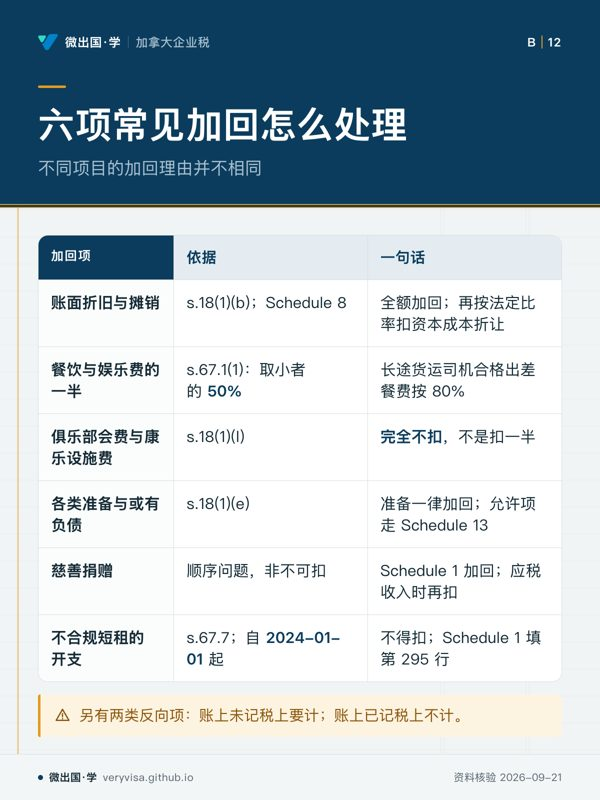

🃏 Flashcards · 3 闪卡 · 3 张 🖼 Slides · 4 幻灯 · 4 页 ✍️ Questions · 7 刷题 · 7 道
公司税 T2 Corporate tax (T2) P2 稳住 P2 Hold steady
ZH EN ZH + EN
先看这一章怎么考 First, how this chapter is tested
题型一：Schedule 1 从财报税后净利润（代码 9999 / 金额 A）到税务净收入与应税收入的综合计算题，重点考账面折旧、所得税费用、餐饮娱乐 50%、俱乐部会费全额加回及慈善捐赠「先加回、后扣除」的两步顺序。 Type 1: a combined calculation question on Schedule 1 from the after-tax net income on the financial statements (code 9999 / Amount A) to net income for tax purposes and taxable income, focusing on book depreciation, income tax expense, the 50% limit on meals and entertainment, full add-back of club dues and the two-step order for charitable donations (add back first, deduct afterwards). 题型二：GIFI 申报与校验规则辨析题，考三条校验等式、七个必填代码（金额为零也必须填 0）、代码粒度要求（不许只报小计和合计）、免交传统财报的唯一例外（承保保险公司）以及 T1178 简表的一百万门槛。 Type 2: a question distinguishing GIFI filing and validity rules, testing the three validity check equations, the seven mandatory codes (zero amounts must still be entered as 0), the granularity requirement (no reporting of subtotals and totals only), the only exception to not filing traditional financial statements (insurance companies involved in underwriting) and the $1,000,000 thresholds for the T1178 short form. 题型三：不可扣费用与三道法律闸门（s.18(1)(a) 目的检验、s.67 合理性检验、s.18(1)(b) 资本性支出、s.18(1)(e) 准备、s.18(1)(l) 俱乐部会费、s.67.7 不合规短租开支）的定性判断题，测试哪一项全额加回、哪一项只能扣一半、哪一项可扣 80%。 Type 3: a characterization question on non-deductible expenses and the statutory gates (the s.18(1)(a) purpose test, the s.67 reasonableness test, s.18(1)(b) capital outlays, s.18(1)(e) reserves, s.18(1)(l) club dues, and s.67.7 non-compliant short-term rental expenses), testing which item is added back in full, which is deductible only by half and which by 80%. 最常丢分的陷阱（看到题干信号就警觉） Traps that cost the most marks (watch for the signal in the stem)
俱乐部会费误按餐饮娱乐扣 50% Deducting only 50% of club dues as meals and entertainment 题干出现 golf club dues、yacht、lodge、camp 或 recreational club membership fees 时，立即全额加回，一分钱不扣。 When the question mentions golf club dues, a yacht, a lodge, a camp or recreational club membership fees, add the amount back in full, with nothing deducted. 慈善捐赠在 Schedule 1 漏加回或重复扣 Missing the add-back of a charitable donation on Schedule 1, or deducting it twice 题干问 Schedule 1 的税务净收入（net income for tax purposes）还是最终的应税收入（taxable income），并同时给出账面已扣的 charitable donations。 The question asks whether Schedule 1's net income for tax purposes or the final taxable income is wanted, and also gives charitable donations already deducted in the books. 误用已取消的三分之二资本利得纳入率或旧版 AII 日期 Using the cancelled two-thirds capital gains inclusion rate or the old AII dates 题干涉及 2026 税年公司处置资本财产（Schedule 6）或 2024 年之后新购置可折旧资产（RIIP / 44、46、50、53、43.1 类即时费用化）的可用年份。 The question involves a corporation's disposition of capital property in the 2026 tax year (Schedule 6) or the years in which depreciable assets newly acquired after 2024 can be used (RIIP / immediate expensing for Classes 44, 46, 50, 53 and 43.1). 本章考点页：导图、要点表、7 道带逐项解析的练习 →
核实日期：2026-09-07｜现行口径：2026 税年（年结落在 2026 年的公司）｜复核：2027-06-30（本页变动最快的一格是资本成本折让的加成参数与车辆上限）
法条依据指向《所得税法》(Income Tax Act, ITA) 与《所得税条例》(Income Tax Regulations, ITR) 现行合订本（Act current to 2026-06-21）；数值指向加拿大税务局 (Canada Revenue Agency, CRA) 与加拿大财政部 (Department of Finance Canada) 的现行页面。
会计师交给你一份损益表，最后一行写着「税后净利润 $180,000」。你把这个数抄进 T2，算出来的税却和会计师给的数对不上。原因不是谁算错了，而是「账上的利润」与「税上的利润」本来就是两个不同的数 ，它们之间隔着一张专门用来做转换的表：Schedule 1。这一页讲的就是从财务报表到税务净收入这一段路——怎么把财报变成 CRA 能读的格式（GIFI），哪些账上扣了的费用税上不认，哪些账上没记的税上要减，以及那条最容易搞反的顺序：慈善捐赠到底在哪一步扣。
这一页帮你看清 GIFI 的三条校验等式与必填代码、小公司最常见的六项 Schedule 1 加回，以及一笔 2026 年买的设备第一年的资本成本折让该按哪一套加速参数算。
年结交接清单：加拿大小公司年结交会计师前：把银行、股东往来与税务账户对成一份可用底稿 。论坛文章把本页的财报、GIFI 与 Schedule 1 规则放进资料交接顺序；个案申报仍以原始账簿、凭证和会计师核对为准。
一、制度设计与底层逻辑：为什么要留着两套账 本节回答 This section answers 回答哪些账面费用被三道法律闸门拦下及GIFI漏报后果 Answer which book expenses are stopped by the three statutory gates and the consequences of missing GIFI items
1.1 会计的目的与税法的目的从一开始就不同
会计准则要回答的问题是「这家公司这一年赚了多少、值多少」，服务对象是股东、银行、买家。为了回答得准，它允许估计——坏账准备、保修准备、减值、按使用年限摊销。
税法要回答的问题是「这家公司这一年该交多少钱」，服务对象是税收征管。它不能容忍估计，因为估计是可以被操纵的 。所以 ITA s.18(1)(e) 直接写死：除非本法另有明文允许，任何作为准备、或有负债或偿债基金的金额一律不得扣除（加拿大联邦法规库 ）。
同样的道理解释了折旧：账面折旧是管理层按自己判断的使用年限计的，税法不认，改用一套全国统一的资本成本折让 (capital cost allowance, CCA) 制度，每一类资产一个法定比率。s.18(1)(b) 明文禁止扣除资本性支出与折旧准备，「除非本部分明文允许」——那个明文允许就是 s.20(1)(a) 下的 CCA（加拿大联邦法规库 ）。
所以 Schedule 1 不是一张勘误表，是两种记账目的之间的翻译表。 它上面的每一行都对应着「会计允许而税法不允许」或反过来的一条具体规则。
1.2 三道贯穿全表的闸
看懂 Schedule 1 的捷径是记住三条几乎每一行背后都站着的规则。
目的检验 ：s.18(1)(a)——不是为赚取经营或财产收入而发生的开支，一律不许扣（加拿大联邦法规库 ）。
合理性检验 ：s.67——即使目的对，也只能扣「在当时情形下合理」的那一部分（加拿大联邦法规库 ）。
资本／收益划分 ：s.18(1)(b)——资本性支出不能一次扣，只能通过 CCA 分年扣（加拿大联邦法规库 ）。
小公司的加回项里，超过八成能追回到这三条中的一条。剩下的是具名的立法取舍 ：餐饮娱乐只扣一半（s.67.1）、俱乐部会费与游艇球场费用完全不扣（s.18(1)(l)）、罚款与部分利息不扣、不合规短租的开支不扣（s.67.7）。
1.3 谁与谁在博弈
公司想让税上的利润尽量贴近甚至低于账上的利润；CRA 想要一套不依赖公司自己判断 的口径。GIFI 就是这个诉求的产物：它不是让你交财报，而是让你把财报拆成标准代码 再交，这样 CRA 可以在全国范围内做机器比对——同一行业、同一规模的公司，某个代码的数字异常，就会被挑出来。
理解这一点，就理解了 GIFI 那条最硬的要求：不许只报小计和合计。 CRA 的原话是「财报上有 40 项就要有 40 个代码」（CRA ）。把明细压成几个大数交上去，等于把它的比对能力废掉，所以它不允许。
1.4 错报的三个法律后果
Schedule 1 少加回 ：应税收入被低估，补税加按规定利率逐日复利的利息；若属重大失实陈述，正常复评期之外仍可重开（本课复评与异议一页详述）。
GIFI 校验不平 ：三条等式（资产＝负债＋权益等）不成立，或七个必填代码缺项，申报会被退回或无法电子提交（CRA ）。这不是罚款，是根本交不上去 。
财报附注漏交 ：编制了附注却没随 GIFI 提交的，属申报不完整。CRA 的规则是电子申报时把附注以文本形式随传输一并提交，纸质申报时附纸质副本（CRA ）。
节末检索小测 · 先别往回翻，凭记忆作答 Quick recall check: answer from memory before scrolling back
An incorporated design studio recorded several expenses on its 2026 income statement, including an estimated warranty reserve and an amortization charge based on management's estimate of useful life. When preparing the corporate tax return, why does the Income Tax Act require these items to be adjusted on Schedule 1?
一家注册设计工作室在 2026 年损益表上记录了若干费用，包括估计的保修准备金以及管理层按预计使用年限计提的摊销费用。在编制公司所得税申报表时，为什么《所得税法》要求在 Schedule 1 上对这些项目进行调整？
a Accounting rules disallow reserves and amortization, so Schedule 1 corrects errors made by the bookkeeper. ✗ 混淆了会计与税法的目的：会计准则为了向股东和银行公允反映公司价值，允许计提准备和按预计使用年限摊销；Schedule 1 不是财务会计的勘误表，而是把会计利润翻译为法定税务口径的转换表（概念混淆陷阱）。 It confuses the purposes of accounting and tax law: to fairly reflect the value of the corporation to shareholders and banks, accounting standards allow reserves and amortization over the estimated useful life; Schedule 1 is not an errata sheet for financial accounting but a conversion table that translates accounting profit into the statutory tax basis (the concept confusion trap).
b Tax law rejects management estimates: s.18(1)(e) bars reserves and s.18(1)(b) bars book depreciation, with CCA under s.20(1)(a) instead. ✓ 正确。税法服务于税收征管，不能容忍可被操纵的管理层估计，因此通过 s.18(1)(e) 禁止扣除未明文允许的准备金（reserves），并通过 s.18(1)(b) 禁止扣除账面折旧与资本性支出（capital outlay），改按 s.20(1)(a) 下的法定资本成本折让（capital cost allowance, CCA）扣除。 Correct. Tax law serves tax administration and cannot tolerate management estimates that can be manipulated, so it prohibits deduction of reserves not expressly allowed through s.18(1)(e), and prohibits deduction of book depreciation and capital outlay through s.18(1)(b), replacing them with the statutory capital cost allowance (CCA) under s.20(1)(a).
c Warranty reserves and book amortization are only 50% deductible under the reasonableness test in s.67. ✗ 张冠李戴了法条与比例：s.67 是合理性检验（reasonableness test），50% 是 s.67.1 餐饮娱乐费的限制；账面保修准备（s.18(1)(e)）和账面摊销（s.18(1)(b)）在 Schedule 1 上必须 100% 全额加回，而非只扣一半（比例混淆陷阱）。 It attaches the wrong provision and percentage: s.67 is the reasonableness test, and 50% is the limit on meals and entertainment under s.67.1; book warranty reserves (s.18(1)(e)) and book amortization (s.18(1)(b)) must be added back 100% on Schedule 1, not deducted by half (the percentage confusion trap).
d The studio can keep its book amortization and warranty reserves for tax purposes as long as it reports them as a single subtotal code on GIFI. ✗ 同时违反两条硬规则：第一，账面摊销和会计准备在税法下不可直接扣除；第二，财务信息通用索引（General Index of Financial Information, GIFI）严禁只报小计和合计（财报有 40 项就要报 40 个代码）（双重违规陷阱）。 It violates two hard rules at once: first, book amortization and accounting reserves are not directly deductible under tax law; second, the General Index of Financial Information (GIFI) strictly forbids reporting only subtotals and totals (40 items on the financial statements require 40 codes) (the double violation trap).
看答案与每个选项的解析 Show the answer and why each option is right or wrong 答案 Answer ：b
二、2026 税年现行规则与数字 本节回答 This section answers 回答GIFI必填码、六项加回、资本利得与RIIP新参数 Answer the GIFI mandatory codes, the six add-backs, capital gains and the new RIIP parameters 本章考题 2 Question 2 本章考题 3 Question 3 本章考题 4 Question 4
2.1 GIFI：三条校验等式与七个必填代码
用了 GIFI 就不再交传统财报。 CRA 的原话是：使用 GIFI 时不要随申报表与附表提交财务报表；如果需要传统财报，它会另行索取（CRA ）。唯一的例外是从事承保业务的保险公司 （人寿、存款、财产与意外），因为 GIFI 没有保险业专用项目，它们仍要附财报（CRA ）。
三条校验等式（CRA ）：
总资产 ＝ 总负债 ＋ 总权益（合伙企业为合伙人资本）
总收入 − 总费用 ＝ 非农业净收益
总农业收入 − 总农业费用 ＝ 农业净收益
为了让这三条能被机器验算，以下代码必填，金额为零也要填 0 （CRA ）：
代码 9999 是承上启下的那一个 ：它既是 GIFI 损益表的最后一行，也是 Schedule 1 的起点 A。
三张 GIFI 附表加两张辅助表（CRA（1（论坛解读） 、2 ））：Schedule 100 资产负债表信息、Schedule 125 损益表信息、Schedule 141 附加信息；新公司首年另附 Schedule 101 期初资产负债表 ；不用软件且总收入与总资产各自低于一百万 的公司可改用纸质表 T1178（GIFI 简表）。
Schedule 141 问的不是数字，是人：谁主要经手了这套财务信息、这个人有没有会计执业资格、与公司有没有关联、有没有提出保留意见，以及谁编制了这份 T2（CRA ）。它把编表人的身份与独立性写进了申报内容本身 ——一份由公司内部人员编制、无执业资格、无外部审阅的财报，在 CRA 眼里与一份经审计的财报，从这张表上就已经分开了。
ℹ️
电子申报之后，纸质财报与附注都不用再寄
电子提交 T2 的公司不必再提交纸质财报与财报附注（CRA（1（论坛解读） 、2 ））；附注以文本形式随传输一并送出即可。但「不用寄」不等于「不用做」 ——附注仍要编制并随 GIFI 提交，只是形态从纸变成了文本。
2.2 Schedule 1：算法只有一句话
CRA 给的算法是（CRA ）：把计入所得税与非常项目后的净利润或净亏损 填在 Schedule 1 第 1 页的金额 A；加上第 101 至 199 行列示的应税项目与不可扣费用；减去第 401 至 499 行列示的非应税项目与可扣费用。附表上没有列名的加回项走第 3 页的 605 列、295 列与第 296 行「其他加项」；没有列名的减项走第 4 页的 705 列、395 列与第 396 行「其他减项」。
图：Schedule 1 税会调整——从财报净利润走到税务净收入
最容易搞反的一步是慈善捐赠。 CRA 特意举了这个例子（CRA ）：算税务净收入时不扣 慈善捐赠——虽然算财报净利润时扣了；慈善捐赠是在得到税务净收入之后 、从税务净收入里扣出来得到应税收入的。所以捐赠在 Schedule 1 上是一个加回项 （把账上扣掉的加回来），然后在 T2 主表的应税收入计算里再作为扣除出现一次。同一笔钱在两页上出现两次、方向相反，这不是错，是设计。
2.3 小公司最常见的六项加回
另有两项方向相反 的常见项：账上没记而税上要计的（如按 Schedule 6 算出的应税资本利得、按 Schedule 13 转回的准备），以及账上记了而税上不计的（如已按 Schedule 6 单独处理的会计上的资产处置损益）。
2.4 资本利得：现行仍是二分之一
T2 指南第 3 章的原话很直接（CRA ）：Schedule 6 上的金额 P 若为利得，把 P × 1/2 填到金额 R 与 Schedule 1 第 113 行。
这一句关掉了 2024 年那场未遂改革在公司侧的全部悬念。 当年提案要把纳入率从二分之一提到三分之二，后来生效日期先被从 2024-06-25 推迟到 2026-01-01，随后该提案被宣布取消 （CRA ）。现行 T2 指南口径未改，公司资本利得仍按二分之一纳入。做 2026 税年的申报时，任何按三分之二写的考试口径、软件或模板都是过期的 。
三个特别纳入率仍然存在（CRA ）：向合格受赠人捐赠特定证券或环境敏感土地的，一般适用零纳入率 （若捐赠人取得了利益或好处，零纳入率只适用于其中一部分）；s.100(1) 下处置合伙企业权益的，可能一部分按 50%、一部分按 100% 纳入——若合伙企业资产全部是存货、可折旧财产或资源财产，则整笔按 100% 纳入（除非有例外）。
2.5 资本成本折让：换了名字，也换了参数
这是本页最需要注意的一格。CRA 现行 T2 指南里，恢复后的加速投资激励叫 reaccelerated investment incentive property (RIIP) ，与考试口径里那版 2018 年的加速投资激励 (AII) 是两套参数 （CRA ）：
RIIP 的资格还要满足三条之一（CRA ）：没有任何人或合伙企业（含本公司）就该财产申报过资本成本折让或终止损失；没有以递延税基的滚存方式转让给本公司；此前未由本公司或非公平交易方持有或取得。
三项即时费用化各有自己的退坡表（CRA ）：
生产力资产（44、46、50 类） ：2024-04-15 之后取得且2027 年前 可用的，首年 100% 扣除；2026 年之后才可用的，只保留半年规则豁免，不再有 100%。
制造与加工机器设备（53 类；2025 年之后取得的按 43 类判，若在 2025 年取得会归入 53 类的） ：首年 100% 扣除，对 2029 年之后 可用的财产开始退坡。
清洁能源设备（43.1 类） ：首年 100% 扣除，同样对 2029 年之后可用的财产开始退坡。
考试口径那一版的日期在 2026 税年全部作废。 用旧参数算，第一年的资本成本折让会直接算错。
车辆一侧的五个上限见本课薪酬与应税福利一页；这里只提一条与折旧基数直接相关的：2026-01-01 之后取得的 10.1 类乘用车，CCA 上限由 $38,000 升至 $39,000 ，但这是财政部新闻稿的已宣布 状态（加拿大财政部（论坛解读） ），《所得税条例》s.7307(1) 的现行合订本末行仍写 $38,000（laws-lois.justice.gc.ca（论坛解读） ）。做 2026 年新购车的折旧基数时要标状态，不能写成已生效的法定值。
2.6 与 Schedule 1 相连的六张附表
一条容易踩的技术细节（CRA ）：合伙企业分配给公司合伙人的应税资本利得或可扣资本损失，不填 Schedule 1 第 129 行 ，而应把该公司在合伙企业利得或损失中的份额填到公司自己的 Schedule 6。
节末检索小测 · 先别往回翻，凭记忆作答 Quick recall check: answer from memory before scrolling back
A corporation operates a short-term rental unit that did not comply with municipal registration rules throughout the 2026 tax year, and it also paid annual membership dues to a local golf club for client networking. How are these two outlays treated on the 2026 Schedule 1?
一家公司在 2026 税年全年经营一套不符合市政登记规定的短租房源，同时为拓展客户支付了当地高尔夫俱乐部的年度会费。这两项支出在 2026 年的 Schedule 1 上应当如何处理？
a Both the non-compliant short-term rental expenses (under s.67.7, reported on line 295) and the golf club dues (under s.18(1)(l)) are 100% non-deductible and must be added back in full. ✓ 正确。自 2024-01-01 起，不合规短租的开支（non-compliant short-term rental expenses）在 s.67.7 下完全不得扣除，填在 Schedule 1 第 295 行加回；高尔夫俱乐部会费（club dues）在 s.18(1)(l) 下同样是 100% 完全不扣，两者均须全额加回。 Correct. Since 2024-01-01, expenses of non-compliant short-term rentals are completely non-deductible under s.67.7 and are added back on Schedule 1 line 295; golf club dues under s.18(1)(l) are likewise 100% non-deductible, so both must be added back in full.
b The non-compliant short-term rental expenses are added back in full on line 295, while 50% of the golf club dues can be deducted under s.67.1. ✗ 落入「俱乐部会费误按餐饮娱乐扣 50%」陷阱：高尔夫球场与康乐俱乐部会费受 s.18(1)(l) 规管，一分钱都不能扣，不适用 s.67.1 的 50% 餐饮娱乐规则。 Falls into the trap 'Deducting only 50% of club dues as meals and entertainment': golf and recreational club dues are governed by s.18(1)(l), under which not one dollar can be deducted, and the 50% meals and entertainment rule of s.67.1 does not apply.
c Both items are deductible on Schedule 1 as long as they were incurred for the purpose of earning income under s.18(1)(a). ✗ 忽略了具名立法禁止条款：即使支出满足 s.18(1)(a) 的目的检验（general limitation），只要触发了 s.18(1)(l)（俱乐部会费）和 s.67.7（不合规短租开支）的明文禁止，就一律不得扣除（以一般规则否定特别禁止陷阱）。 It ignores the specific legislative prohibitions: even if an expense meets the purpose test of s.18(1)(a) (general limitation), it cannot be deducted at all once it triggers the express prohibitions in s.18(1)(l) (club dues) and s.67.7 (non-compliant short-term rental expenses) (the trap of using the general rule to defeat a specific prohibition).
d The golf club dues are added back in full on Schedule 1, while the non-compliant short-term rental expenses are carried forward on Schedule 13 as a tax reserve. ✗ 混淆了不可扣开支与税法准备金：s.67.7 下的不合规短租开支是永久不可扣除的加回项（填 Schedule 1 第 295 行），不能作为税法允许的准备金放进准备金连续性表（Schedule 13）（附表通道错位陷阱）。 It confuses non-deductible expenses with tax reserves: non-compliant short-term rental expenses under s.67.7 are a permanently non-deductible add-back (entered on Schedule 1 line 295) and cannot be put on the continuity of reserves schedule (Schedule 13) as a reserve permitted by tax law (the misplaced schedule channel trap).
看答案与每个选项的解析 Show the answer and why each option is right or wrong 答案 Answer ：a
三、实务流程：从试算平衡表到 T2 的六步 本节回答 This section answers 回答从定稿财报、选码校验到先算附表再回填的顺序 Answer the order of finalizing the financial statements, choosing and validating codes, and computing the schedules before filling Schedule 1
第一步 · 定稿财报。 先把这一年的资产负债表与损益表定下来，包括附注。GIFI 是从财报映射出来的，财报没定稿就映射，改一次要重做一遍。
第二步 · 选代码。 逐项在 GIFI 代码表里找对应项。找不到完全匹配的，用该区块开头那个通用项 （CRA 明确说通用项不代表区块内各项的合计，只是同类项的兜底名称，CRA ）。粒度要求：财报上有多少项就要有多少代码，不许只报小计与合计 。
第三步 · 过校验。 把七个必填代码填齐（零也填 0），验三条等式。这一步不过，电子申报根本传不出去。
第四步 · 做 Schedule 1。 把 GIFI 的 9999 抄到金额 A，逐项加回与扣减。没有列名的项走 605／295／296 与 705／395／396。
第五步 · 回填附表。 Schedule 6 的资本利得进 Schedule 1 第 113 行；Schedule 8 的资本成本折让进相应扣除行；Schedule 13 的准备变动进第 414 行与第 126 行。顺序是先算附表，再回填 Schedule 1，不是反过来。
第六步 · 附注与 Schedule 141。 有财报附注的以文本形式随传输提交；Schedule 141 的五个部分逐一如实作答，包括「有没有提出保留意见」这一问。
⚠️
「零活动公司」也要走完这条流程
全年没有任何交易的公司仍要报 T2（CRA ）。若它有资产负债表或损益表数据要报，仍用 GIFI 报（CRA ），七个必填代码照填、零填 0，三条等式照验。「没有活动」不等于「没有资产负债表」 ——账上还有一笔银行存款和一笔股东往来，这两个数就要报。
节末检索小测 · 先别往回翻，凭记忆作答 Quick recall check: answer from memory before scrolling back
When a preparer is completing a 2026 corporate tax return electronically, what is the required workflow order and filing treatment for auxiliary schedules and financial statement notes?
当办税人员以电子方式编制 2026 年公司税申报表时，附属附表与财务报表附注的正确操作顺序和提交方式是什么？
a Complete Schedule 1 first to lock in net income for tax purposes, then allocate that figure backward into Schedules 6, 8, and 13; paper notes must be mailed separately. ✗ 颠倒了实务流程且误解了无纸化规则：正确顺序是先算完 Schedule 6、8、13 再把结果回填到 Schedule 1；同时电子申报不必再寄送纸质财报附注，而是以文本形式随电子传输一并提交（流程倒置陷阱）。 It reverses the practical process and misunderstands the paperless rule: the correct order is to complete Schedules 6, 8 and 13 first and then feed the results back into Schedule 1; also, e-filers need not mail paper notes to the financial statements but submit them as text with the electronic transmission (the reversed process trap).
b Map the draft trial balance to GIFI using only section subtotals, skip Schedule 141 if no external auditor was hired, and omit financial statement notes when filing electronically. ✗ 违反了三项实务硬规定：第一，必须先定稿财报再映射 GIFI，且严禁只报小计；第二，即使由内部无执业资格人员编表也必须如实填报 Schedule 141；第三，电子申报不用寄纸件不等于不用交，编了财报附注仍必须以文本形式随传输提交（省事漏报陷阱）。 It violates three practical rules: first, the financial statements must be finalized before mapping to GIFI, and reporting only subtotals is strictly forbidden; second, Schedule 141 must be completed truthfully even if the statements were prepared internally by someone with no designation; third, 'no need to mail paper' for e-filing does not mean 'no need to submit': notes to the financial statements that have been prepared must still be submitted as text with the transmission (the shortcut omission trap).
c Finish Schedules 6, 8 and 13 before filling Schedule 1, send prepared notes as text with the e-filing, and answer every part of Schedule 141. ✓ 正确。实务六步流程要求：先完成 Schedule 6（资本利得进第 113 行）、Schedule 8（CCA 扣除）与 Schedule 13（税法准备变动进第 414/126 行）再回填到 Schedule 1（Net Income (Loss) for Income Tax Purposes），将财报附注（notes to the financial statements）以文本形式随传输提交，并如实作答 Schedule 141 的五个部分。 Correct. The six practical steps require completing Schedule 6 (capital gains to line 113), Schedule 8 (CCA deduction) and Schedule 13 (changes in tax-permitted reserves to lines 414/126) before feeding them back into Schedule 1 (Net Income (Loss) for Income Tax Purposes), submitting the notes to the financial statements as text with the transmission, and answering all five parts of Schedule 141 truthfully.
d Enter GIFI code 9999 after deducting charitable donations, leave zero-balance validity check items blank, and attach traditional paper financial statements. ✗ 集齐三处常见错误：代码 9999 是财报税后净利润（已扣账面捐赠，在 Schedule 1 上要把捐赠加回）；七个校验必填项（validity check items）为零时必须填 0 不能留空；使用 GIFI 后（除承保保险公司外）不再交传统财报（GIFI 校验陷阱）。 It collects three common errors: code 9999 is after-tax net income on the financial statements (the book donation has already been deducted, and the donation must be added back on Schedule 1); the seven validity check items must be entered as 0 and not left blank when zero; and once GIFI is used (except by insurance companies involved in underwriting), traditional financial statements are no longer filed (the GIFI validity check trap).
看答案与每个选项的解析 Show the answer and why each option is right or wrong 答案 Answer ：c
四、联邦之外：省级那一格不重算税务净收入 本节回答 This section answers 回答省级是否重算税务净收入及BC省表427的衔接机制 Answer whether provinces recalculate net income for tax purposes and how BC Schedule 427 connects
一个对小公司很重要、但很少被讲清楚的事实：税务净收入是全国一套，不分省重算 。
公司在联邦这一侧算出税务净收入与应税收入之后，各省的公司税是在同一个应税收入 基础上，按各省自己的税率与限额计算的。BC 侧填的是 Schedule 427（卑诗省公司税计算表），随 T2 一起报，不需要单独的省级税号（BC 省政府 在本课 T2 入门一页详述）。所以 Schedule 1 上的每一处加回或减项，会同时改变联邦税与省税两个数 ——这是税会调整的杠杆比看起来更大的原因。
有省级差异的是抵免 而不是收入计算：各省的制造加工投资税收抵免、研发抵免、影视抵免等，都是在算出税额之后再抵，走各自的省级附表。BC 自 2026-04-01 起新增了一项临时可退还的制造加工投资税收抵免（CRA ），适用于 BC 的加拿大受控私人公司投资于在 BC 用于制造加工的建筑物、机器与设备，具体排除项与支出限额以立法为准。做资本性支出规划时，联邦的资本成本折让参数与省级的投资抵免要一起看 ——同一笔设备采购，可能同时触发 RIIP 的首年加成与省级抵免。
节末检索小测 · 先别往回翻，凭记忆作答 Quick recall check: answer from memory before scrolling back
A Canadian-controlled private corporation operating in British Columbia adds back $9,500 of non-deductible club dues on its federal Schedule 1 for the 2026 tax year. How does this Schedule 1 adjustment affect its British Columbia corporate tax calculation on Schedule 427?
一家在卑诗省（BC）经营的加拿大受控私人公司在 2026 税年的联邦 Schedule 1 上加回了 $9,500 不可扣除的俱乐部会费。这项 Schedule 1 调整如何影响其在 Schedule 427 上的 BC 省公司税计算？
a It has no automatic effect because British Columbia recalculates a separate provincial net income for tax purposes using its own deduction rules. ✗ 违背了「税务净收入全国一套、不分省重算」的核心机制：各省不单独重算税务净收入，而是直接沿用联邦算出的应税收入（省税独立重算误区）。 It violates the core mechanism that net income for tax purposes is one nationwide set without provincial recalculation: provinces do not recalculate net income for tax purposes separately but use the taxable income computed federally (the independent provincial recalculation misconception).
b It raises both federal and BC taxable income by $9,500, since Schedule 427 works from the same taxable income base. ✓ 正确。税务净收入（net income for tax purposes）和应税收入（taxable income）是全国统一的一套数字，BC 省的 Schedule 427 直接在同一个应税收入基数上按省税率计算省税（不需要单独的省级税号），因此 Schedule 1 上的每一笔加回都会同时提高联邦与 BC 省的应税收入。 Correct. Net income for tax purposes and taxable income are one nationwide set of numbers, and BC's Schedule 427 computes provincial tax at provincial rates directly on the same taxable income base (no separate provincial tax number is needed), so every add-back on Schedule 1 raises both federal and BC taxable income at the same time.
c It reduces the corporation's British Columbia manufacturing and processing investment tax credit directly dollar-for-dollar on Schedule 1. ✗ 混淆了收入调整与省级税额抵免的层级：Schedule 1 调整的是应税收入基数，而 BC 自 2026-04-01 起新增的临时可退还制造加工投资税收抵免是在算出省税之后在省级附表上抵扣，不在 Schedule 1 上按一比一冲减（收入与抵免层级混淆陷阱）。 It confuses the levels of an income adjustment and a provincial tax credit: Schedule 1 adjusts the taxable income base, whereas the temporary refundable BC manufacturing and processing investment tax credit newly added from 2026-04-01 is deducted on the provincial schedule after the provincial tax is computed and not dollar for dollar on Schedule 1 (the income versus credit level confusion trap).
d The corporation must file a separate provincial Schedule 1 under a separate BC corporate tax account number to report the $9,500 add-back. ✗ BC 省公司税随联邦 T2 一起通过 Schedule 427 申报，既没有单独的省级 Schedule 1，也不需要单独的省级公司税号（多头申报误区）。 BC corporate tax is filed with the federal T2 through Schedule 427; there is neither a separate provincial Schedule 1 nor a separate provincial corporate tax number (the multiple filing misconception).
看答案与每个选项的解析 Show the answer and why each option is right or wrong 答案 Answer ：b
五、历史变革：从「附财报」到「拆成代码」 本节回答 This section answers 回答GIFI上线目的、RIIP改名与资本利得提案取消过程 Answer why GIFI was launched, how RIIP was renamed and how the capital gains proposal was cancelled
2000 年之前 ：公司随 T2 附上一份纸质财务报表，CRA 靠人工阅读。同一笔「维修费」在不同公司的报表上可能叫十种名字，无法横向比对。
2000 年前后 ：GIFI 上线，把财报科目映射成统一编码。这次改变的本质不是减轻申报负担，而是把财报从叙述变成数据 ——从此 CRA 可以按行业、按规模做异常值筛查。
电子申报普及之后 ：纸质财报与附注不再需要寄送（CRA（1（论坛解读） 、2 ））。这是 GIFI 完成使命的标志——既然结构化数据已经能表达财报的全部内容，纸质件就成了冗余。
2018-11-20 ：加速投资激励出台，对新取得的资产给首年 50% 净增加成并豁免半年规则，原定逐步退坡至 2027 年底。
2024-12-16 秋季经济声明 ：宣布恢复加速投资激励与即时费用化，适用于 2025-01-01 之后取得、2030 年前可用的合格财产，2029 年后四年退坡（CRA ）。CRA 随后在 T2 指南里用了 RIIP 这个新名字与一组新日期（CRA ）——这是本课「术语改名往往意味着参数也改了」这条规律最新的一个实例。
2024–2025 的资本利得纳入率 ：先提案从二分之一提到三分之二，再推迟生效日，最后取消（CRA ）。现行 T2 指南仍写二分之一（CRA ）。这一段最值得记住的不是数字，而是「提案 → 推迟 → 取消」这个完整周期在两年内走完了一遍 ——它是「拟议永不写成规则」这条纪律最贵的一次演示。
节末检索小测 · 先别往回翻，凭记忆作答 Quick recall check: answer from memory before scrolling back
Why did the Canada Revenue Agency transition corporate filing around the year 2000 from attaching traditional paper financial statements to mapping line items into GIFI codes?
为什么加拿大税务局（CRA）在 2000 年前后将公司报税从「附交传统纸质财务报表」改为「将报表项目映射为 GIFI 代码」？
a To allow corporations to report only high-level balance sheet and income statement subtotals so bookkeepers spend less time preparing line items. ✗ 恰好搞反了 GIFI 的监管意图：CRA 明确禁止只报小计和合计（财报上有 40 项就要有 40 个代码），GIFI 的目的不是帮公司省去明细，而是防止明细被合并掩盖（误把监管当减负陷阱）。 This is exactly backwards from the regulatory purpose of GIFI: the CRA expressly forbids reporting only subtotals and totals (40 items on the financial statements require 40 codes), and the purpose of GIFI is not to relieve companies of detail but to prevent the detail from being combined and hidden (the trap of mistaking regulation for relief).
b To eliminate the requirement to reconcile accounting profit to net income for tax purposes on Schedule 1. ✗ GIFI 只是把传统财报转换成标准化的结构数据（终点是代码 9999），会计利润与税法利润之间的差异仍然必须通过 Schedule 1 逐项调整（GIFI 替代 Schedule 1 误区）。 GIFI merely converts traditional financial statements into standardized structured data (ending at code 9999); the differences between accounting profit and tax profit must still be adjusted item by item on Schedule 1 (the GIFI replaces Schedule 1 misconception).
c To allow insurance corporations involved in underwriting to stop preparing specialized industry financial statements. ✗ 记反了唯一例外：因为 GIFI 没有保险业专用项目，从事承保业务的保险公司（人寿、存款、财产与意外）是唯一在使用 GIFI 时仍须附交传统财务报表的例外（例外对象记反陷阱）。 It reverses the only exception: because GIFI has no insurance-specific items, insurance companies involved in underwriting (life, deposit, property and casualty) are the only ones who must still attach traditional financial statements when using GIFI (the reversed exception trap).
d To turn narrative statements into standard data codes so the CRA can screen for outliers by industry and size. ✓ 正确。2000 年之前同一笔费用在不同公司的纸质财报上叫法各异，人工难以横向比对；引入财务信息通用索引（General Index of Financial Information, GIFI）的本质是把叙述变成标准化数据，使 CRA 能按行业和规模在全国范围内用机器筛查异常值。 Correct. Before 2000, the same expense was called different things on the paper statements of different corporations and was hard to compare across companies by hand; the essence of introducing the General Index of Financial Information (GIFI) was to turn narrative into standardized data, so that the CRA can screen for outliers by industry and size across the country by machine.
看答案与每个选项的解析 Show the answer and why each option is right or wrong 答案 Answer ：d
六、案例 本节回答 This section answers 回答咨询公司税会调整、制造厂机器即时费用化与零活动公司报税 Answer a consulting firm's tax and accounting adjustments, immediate expensing for a factory's machinery and the filing of an inactive corporation 本章考题 1 Question 1
案例一 · 温哥华的咨询公司：账上 $180,000，税上多少（示例）
示例公司「岭南咨询」2026 年 12 月 31 日年结，财报税后净利润 $180,000。会计明细里有：账面折旧 $42,000；客户餐饮与娱乐费 $16,000；一位董事的高尔夫俱乐部年费 $9,500；坏账准备增加 $8,000；慈善捐赠 $5,000；当年所得税费用（账面计提）$38,000。同年按 Schedule 8 算出的资本成本折让为 $55,000。
Schedule 1 从金额 A ＝ $180,000 起：
加回账面折旧 $42,000；加回餐饮娱乐费的一半 $8,000（s.67.1）；加回俱乐部会费全额 $9,500（s.18(1)(l)，不是一半）；加回坏账准备增加额 $8,000（s.18(1)(e)）；加回慈善捐赠 $5,000（顺序问题）；加回账面所得税费用 $38,000（公司所得税本身不可扣）。加项合计 $110,500。
减去资本成本折让 $55,000。
税务净收入 ＝ $180,000 ＋ $110,500 − $55,000 ＝ $235,500 。
再从税务净收入里扣慈善捐赠 $5,000，得到应税收入 $230,500 。
账上 $180,000，税上 $230,500，差了 $50,500。 差额里最大的一块是所得税费用 $38,000，这是所有公司都有的结构性差异；最该避免的一块是俱乐部会费，它是一笔纯粹的损失：$9,500 的会费一分钱扣不了，等于用税后的钱付了这份年费。
案例二 · 素里的制造厂：一台机器，两套参数差多少（示例）
示例公司「枫岭精工」2026 年 3 月花 $200,000 买了一台用于货物制造加工的机器，当年投入使用。
按考试口径那版 AII 的直觉算 ：属加速投资激励财产，净增加成 50%，53 类比率 50%……算出一个数。
按现行规则算 ：这台机器 2026 年取得，属 53 类（或 2025 年之后取得按 43 类判、若在 2025 年取得会归 53 类的），落在制造与加工机器设备的即时费用化 里——首年 100% 扣除，退坡从 2029 年之后可用的财产开始（CRA ）。也就是说，这 $200,000 在 2026 年一次扣光 。
按 BC 的加拿大受控私人公司合并税率 11% 粗算，这一步在第一年省下的现金约 $22,000；若按一般税率 27%，约 $54,000。同一台机器，用考试口径参数和用现行参数，第一年的税差可以是五位数。
同一笔采购还可能落进 BC 自 2026-04-01 起的临时制造加工投资税收抵免（CRA ）——联邦扣除与省级抵免是两条独立的路，可以同时走 ，具体资格以省级立法为准。
案例三 · 列治文的贸易公司：零活动，仍要走完全套（示例）
示例公司「江畔进出口」2026 年全年没有任何交易，账上只剩银行存款 $12,000 与一笔应付股东款 $12,000，净利润为零。老板认为「没生意就不用报」。
实际义务 ：仍要报 T2（CRA ）。有资产负债表数据，就要用 GIFI 报（CRA ）：代码 2599 总资产 $12,000、3499 总负债 $12,000、3620 股东权益 $0、8299 总收入 $0、9368 总费用 $0、9999 净利润 $0。三条等式验：$12,000 ＝ $12,000 ＋ $0，成立。
不报的后果 ：s.162(1) 的迟报罚基数是「期限时未付的税」，本例为零，所以罚款算出来是零。但这不是可以不报的理由 ——公司要注销必须先把各年 T2 报齐；而且一旦某年被认定有税（例如那笔股东往来被按 s.15(2) 计入收入并引发连锁调整），罚款就有了基数，且从原始期限起算。零税年的申报成本几乎为零，不报的期权成本却是开放的。
节末检索小测 · 先别往回翻，凭记忆作答 Quick recall check: answer from memory before scrolling back
An import-export corporation had zero business transactions throughout its 2026 tax year. Its year-end balance sheet shows only $12,000 in cash and a $12,000 amount due to a shareholder, with $0 net income. What is the corporation's 2026 filing obligation?
一家进出口公司在 2026 税年全年没有任何经营交易，期末资产负债表上只有银行存款 $12,000 和应付股东款 $12,000，净利润为 $0。该公司在 2026 税年的申报义务是什么？
a No T2 return is required for 2026 because the corporation was completely inactive and owes $0 tax under s.162(1). ✗ 落入「零活动不报税」陷阱：全年无交易的公司仍必须申报 T2；虽然因当期未付税额为零使 s.162(1) 迟报罚款暂时算出来是零，但未来注销公司必须补齐各年 T2，且一旦那笔 $12,000 股东往来日后被按 s.15(2) 调增收入产生税款，迟报罚款就会从原始期限起算。 Falls into the 'inactive corporation need not file' trap: a corporation with no transactions all year must still file a T2; although, because the tax unpaid for the period is zero, the s.162(1) late-filing penalty computes to zero for now, the T2 for every year must be made up when the corporation is dissolved in future, and once the $12,000 shareholder account is added to income under s.15(2) in future and produces tax, the late-filing penalty runs from the original deadline.
b It must file a T2 with GIFI: 2599 and 3499 at $12,000, and 0 entered for 3620, 8299, 9368 and 9999 so the checks balance. ✓ 正确。零活动公司仍须报 T2，且只要账上有资产负债表数据就要用财务信息通用索引（GIFI）申报：填报代码 2599 总资产 $12,000、3499 总负债 $12,000，并把 3620 股东权益、8299 总收入、9368 总费用与 9999 净利润均填为 0（不可留空），使 $12,000 ＝ $12,000 ＋ $0 的校验等式成立。 Correct. An inactive corporation must still file a T2, and as long as there is balance sheet data in the books it must report under the General Index of Financial Information (GIFI): enter code 2599 total assets of $12,000 and 3499 total liabilities of $12,000, and enter 0 (not blank) for 3620 shareholders' equity, 8299 total revenue, 9368 total expenses and 9999 net income, so that the validity equation $12,000 = $12,000 + $0 holds.
c It must file a T2 return, but it only needs to enter 2599 ($12,000) and 3499 ($12,000) on GIFI while leaving 3620, 8299, 9368, and 9999 blank. ✗ 落入「GIFI 必填代码留空」陷阱：GIFI 的校验必填项（validity check items）即使金额为零也必须明确填入数字 0，留空会导致校验不过而无法电子提交。 Falls into the 'GIFI mandatory codes left blank' trap: GIFI validity check items must be explicitly entered as the number 0 even when the amount is zero, and leaving them blank causes the validity check to fail and prevents e-filing.
d It is exempt from GIFI and must mail a paper letter to the CRA stating that the $12,000 bank balance equals the $12,000 shareholder loan. ✗ 零活动不等于豁免 GIFI：只要公司有资产负债表或损益表数据要报，就必须通过 GIFI（或符合条件时的纸质 T1178 简表）填报标准代码，不能用一封说明信代替 T2 与 GIFI 附表（自创申报方式陷阱）。 Inactive does not mean exempt from GIFI: as long as the corporation has balance sheet or income statement data to report, it must report standard codes through GIFI (or the paper T1178 short form where eligible), and a letter of explanation cannot replace the T2 and the GIFI schedule (the self-invented filing method trap).
看答案与每个选项的解析 Show the answer and why each option is right or wrong 答案 Answer ：b
七、常见错报与自查清单 本节回答 This section answers 回答十一种高频错报的识别信号与交表前自查方法 Answer the signals for recognizing eleven frequent reporting errors and how to self-check before filing
把账面净利润直接当税务净收入。 两者之间隔着 Schedule 1。识别方法：只要 Schedule 1 的加减项合计为零，先怀疑是漏做而不是恰好没有差异。
俱乐部会费按餐饮的一半扣。 s.18(1)(l) 是完全不扣，与 s.67.1 的 50% 是两条不同的规则。识别方法：凡涉及游艇、营地、旅舍、高尔夫或以提供餐饮康乐体育设施为主要目的的俱乐部，一律全额加回。
慈善捐赠在 Schedule 1 上扣了一次、在应税收入里又扣一次。 它在 Schedule 1 上是加回，在应税收入这一步才扣。识别方法：捐赠在 T2 上必须出现两次且方向相反，只出现一次就是错的。
资本利得按三分之二纳入。 提案已取消，现行仍是二分之一。识别方法：任何 2024 至 2025 年间编写的模板都要重新核。
用考试口径的加速投资激励日期算第一年折旧。 现行是 RIIP，取得与可用的时间窗、加成的截止年份全部不同。识别方法：凡涉及 2024 年之后取得的财产，回现行 T2 指南第 3 章核参数。
44、46、50 类还在按 100% 扣。 这三类的即时费用化只覆盖 2027 年前可用的财产，2026 年之后可用的只剩半年规则豁免。识别方法：先看「可用于使用」的日期，不是购买日期。
GIFI 只报小计与合计。 CRA 明文要求财报上有多少项就要有多少代码。识别方法：数一下财报行数与 GIFI 代码数，两个数应当接近。
必填代码留空而不是填 0。 金额为零也要填 0，否则校验不过。识别方法：交表前逐一核对那七个代码是否都有值。
合伙企业分来的资本利得填进 Schedule 1 第 129 行。 应该走公司自己的 Schedule 6。识别方法：只要公司是合伙企业成员，资本利得一律先进 Schedule 6。
财报上的准备期初期末数填进 Schedule 13。 财报准备走 Schedule 1 的第 414 行与第 126 行，Schedule 13 只放税法允许的准备。识别方法：先问「这笔准备税法认不认」，认的才进 Schedule 13。
编了财报附注但电子申报时没随传输提交。 附注仍要交，只是形态从纸变成文本。识别方法：提交前确认附注文本已经在传输文件里。
节末检索小测 · 先别往回翻，凭记忆作答 Quick recall check: answer from memory before scrolling back
During a pre-filing review of a 2026 corporate tax return, a reviewer notices that the corporation's opening and closing accounting bad debt reserves were entered on Schedule 13, and a $5,000 charitable donation was deducted once on Schedule 1 and deducted a second time in the taxable income section. How should the reviewer correct these two items?
在对一份 2026 年公司税申报表进行交表前复核时，复核人发现公司财报上的期初与期末坏账准备被填进了 Schedule 13，且一笔 $5,000 的慈善捐赠在 Schedule 1 上扣了一次、在应税收入计算区又扣了一次。复核人应当如何纠正这两处错误？
a Keep the accounting bad debt reserves on Schedule 13, and remove the $5,000 charitable donation from the taxable income section so it is only deducted on Schedule 1. ✗ 两处都改反了：第一，Schedule 13 只放税法允许的准备，财报上的坏账准备不能进 Schedule 13；第二，慈善捐赠在计算税务净收入（Schedule 1）时不能扣除，必须在应税收入（taxable income）阶段才扣（双重反向错误陷阱）。 Both are changed the wrong way round: first, Schedule 13 holds only reserves permitted by tax law, and the bad debt reserve on the financial statements cannot go on Schedule 13; second, a charitable donation cannot be deducted in computing net income for tax purposes (Schedule 1) and must be deducted only at the taxable income stage (the double reverse error trap).
b Move the accounting bad debt reserves to Schedule 6, and leave the charitable donation deducted in both places because corporate donations qualify for a double deduction. ✗ 附表指派错误且编造双重扣除：Schedule 6 是资本财产处置汇总表，与坏账准备无关；慈善捐赠在两处出现时方向必须相反（Schedule 1 加回、应税收入扣除），同向扣两次会导致应税收入被少算 $10,000（重复扣除陷阱）。 It assigns the wrong schedule and invents a double deduction: Schedule 6 is the summary of dispositions of capital property and has nothing to do with bad debt reserves; where a charitable donation appears in two places, the directions must be opposite (add back on Schedule 1, deduct in taxable income), and deducting it twice in the same direction understates taxable income by $10,000 (the double deduction trap).
c Move the accounting reserves to Schedule 1 lines 414 and 126, and make the donation an add-back on Schedule 1, keeping the taxable income deduction. ✓ 正确。准备金连续性表（Schedule 13）只填税法允许的准备，财报上的期初期末准备应改走 Schedule 1 第 414 行与第 126 行；慈善捐赠在 T2 上必须出现两次且方向相反——先在 Schedule 1 上把账面已扣的 $5,000 加回以算出税务净收入，再在应税收入计算步扣减 $5,000。 Correct. The continuity of reserves schedule (Schedule 13) holds only reserves permitted by tax law, so the opening and closing reserves on the financial statements should instead go through Schedule 1 lines 414 and 126; a charitable donation must appear twice on the T2 in opposite directions: first add back the $5,000 already deducted in the books on Schedule 1 to arrive at net income for tax purposes, then deduct $5,000 at the taxable income computation step.
d Delete the accounting bad debt reserves from the return entirely because reserves are ignored on Schedule 1, and add back the $5,000 donation in both Schedule 1 and taxable income. ✗ 漏做准备调整且吞没捐赠扣除：财报已计提的坏账准备变动必须在 Schedule 1（第 414 行与第 126 行）调整，不能直接忽略；若在应税收入阶段也把捐赠加回，公司将彻底失去合格慈善捐赠扣除（矫枉过正陷阱）。 It omits the reserve adjustment and swallows the donation deduction: changes in the bad debt reserve already accrued on the financial statements must be adjusted on Schedule 1 (lines 414 and 126) and cannot simply be ignored; and if the donation is also added back at the taxable income stage, the corporation loses the qualifying charitable donation deduction altogether (the overcorrection trap).
看答案与每个选项的解析 Show the answer and why each option is right or wrong 答案 Answer ：c
术语双语对照
来源
法条与条例（现行合订本，Act current to 2026-06-21）：s.18(1)(a) 目的检验、s.18(1)(b) 资本性支出、s.18(1)(e) 准备、s.18(1)(l) 俱乐部与康乐设施（加拿大联邦法规库 ）· s.67 合理性检验（加拿大联邦法规库 ）· s.67.1 餐饮与娱乐 50%（加拿大联邦法规库（论坛解读） ）· s.67.7 不合规短租开支（加拿大联邦法规库 ）· s.78(4) 未付薪酬 180 天规则（加拿大联邦法规库（论坛解读） ）· ITR s.7307 乘用车法定参数（laws-lois.justice.gc.ca（论坛解读） ）。
CRA 现行页面：T2 指南第 3 章「税务净收入的计算」与 Schedule 1／6／8／13、加速与再加速投资激励（CRA ）· T2 指南第 2 章 GIFI 与信息附表（CRA（论坛解读） ）· T2 指南「开始之前」的申报义务（CRA ）· T2 指南第 4 章小企业扣除（CRA ）· 财务信息通用索引指南（CRA ）。
财政部：2026 车辆扣除上限（加拿大财政部（论坛解读） ）。
本页知识卡 不看正文也能拿到这一节的核心内容：先看导读，再看图。点图放大，左右翻页。
放大 ⤢ GIFI 用勾稽关系和代码完成自检 先看 先看三类勾稽，再查各项目能否让系统完成验算。易漏 公司与合伙企业的权益项目并非同一编码。下一步 去练习，用一份试算表逐项对勾。详情与分享 → 
放大 ⤢ 141 把编表人背景纳入申报信息 先看 先分常规附表、首年追加与可替代的纸表。易漏 纸质简表的两个规模条件必须同时满足。下一步 去练习，判断你的申报组合该带哪些表。详情与分享 → 
放大 ⤢ Schedule 1 把财报利润调成税务净收入 先看 按财报起点、加项、减项、兜底栏位的顺序看。易漏 捐赠是顺序差异，不要把先加回理解成永远不能扣。下一步 去练习，拿一笔账税差异判断加还是减。详情与分享 → 
放大 ⤢ 捐赠加回只是改变扣除顺序 先看 先找永久不能扣的项目，再看只是改变扣除顺序的项目。易漏 短租规则有起算日，餐费另有特定从业者例外。下一步 去练习，按总账科目判断是否需要税会调整。详情与分享 → 本站依据官方原文自撰 · 出处见正文链接